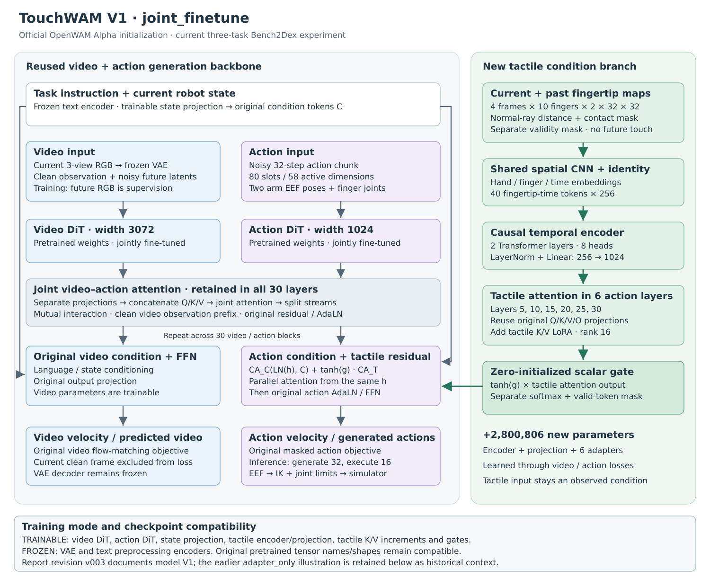
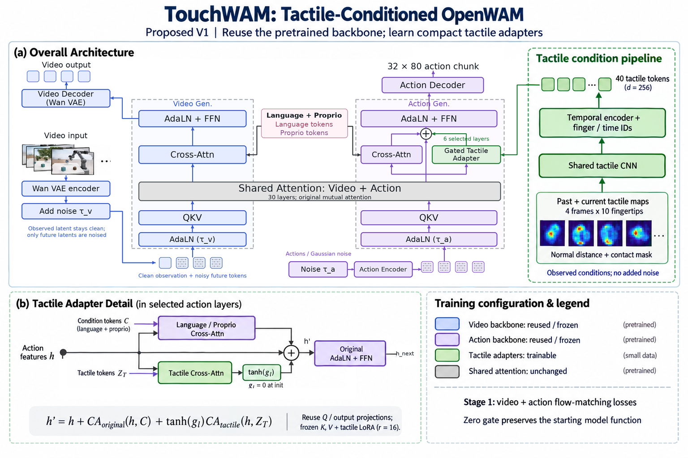
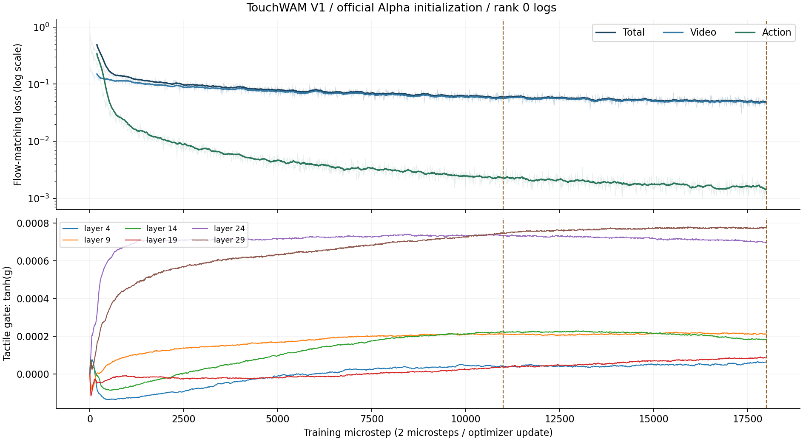

罐头摆盘（26） · 成功
TouchWAM 18k · episode 0001 · seed 102600000 · 34.8s
稳定成功判定：stable_success
更新：2026-10-09（北京时间） · TouchWAM V1 · 三任务结果、当前架构、GR00T 训练预算与执行视频
三个 checkpoint 各完成 150 回合。相同训练预算下，触觉版暂未超过无触觉基线；18k 的小幅提升尚不能归因于触觉。
口径：3 个完整 IIWA7 + Sharpa 任务，各 50 次，None profile。三组权重均从官方 Alpha 初始化；11k / 18k 表示本轮微调 microsteps。
统一使用 None 配置：恢复参考场景，不额外施加泛化扰动；与是否输入触觉无关。每个模型在每个任务测试 50 回合，共 150 回合。主表展示 OpenWAM 11k、TouchWAM 11k / 18k；13k 补充结果见训练预算分析。
| 模型 | 来源 | 罐头摆盘（26） | 烤盘准备（32） | 完整拼图（73） | 三任务平均成功率 |
|---|---|---|---|---|---|
| ACT | Bench2Dex 论文 | 34%（17/50） | 18%（9/50） | 0%（0/50） | 17.33% |
| Diffusion Policy | Bench2Dex 论文 | 0%（0/50） | 4%（2/50） | 0%（0/50） | 1.33% |
| π0.5 | Bench2Dex 论文 | 14%（7/50） | 14%（7/50） | 0%（0/50） | 9.33% |
| GR00T N1.5 | Bench2Dex 论文 | 34%（17/50） | 24%（12/50） | 20%（10/50） | 26.00% |
| OpenWAM 11k，无触觉 | 我们复现 | 52%（26/50） | 40%（20/50） | 4%（2/50） | 32.00% |
| TouchWAM 11k | 我们的方法 | 48%（24/50） | 34%（17/50） | 6%（3/50） | 29.33% |
| TouchWAM 18k | 我们的方法 | 44%（22/50） | 46%（23/50） | 10%（5/50） | 33.33% |
粗体表示本表对应列的最高值。论文行来自 Bench2Dex Table 2 的 None 列，已将成功次数换算成百分比。这里的三任务平均不是论文四配置 SR，也不是 26 任务总平均。
TouchWAM 18k 为 50/150，OpenWAM 11k 为 48/150；训练预算不同且仅相差 2 回合，当前结果尚不能证明触觉带来稳定收益。
我们在同一份 Bench2Dex 三任务混合数据上，分别微调无触觉 OpenWAM 和带触觉的 TouchWAM V1，并在 RTX 4090 上完成三个任务各 50 回合的 none 配置测评。三组本地实验均已完成 150/150 回合，各保存 150 个 MP4，结果和视频均已回传 A100。
| 本地模型 | Bench2Dex 微调 microsteps | 优化器更新次数 | 成功 / 总回合 | 三任务平均成功率 |
|---|---|---|---|---|
| OpenWAM，无触觉 | 11,000 | 5,500 | 48/150 | 32.00% |
| TouchWAM V1，从官方 Alpha 初始化 | 11,000 | 5,500 | 44/150 | 29.33% |
| TouchWAM V1，同一次训练的后期权重 | 18,000 | 9,000 | 50/150 | 33.33% |
相同训练步数下，当前触觉方案的总体成功率比无触觉基线低 2.67 个百分点；尚未证明加入触觉带来稳定收益。 将 TouchWAM 从 11,000 继续训练到 18,000 microsteps 后，总体提高 4 个百分点，但与无触觉 11,000 的比较混入了训练预算差异。18,000 版本只比无触觉基线多成功 2 回合，也不足以支持“触觉显著提升性能”的结论。
本报告中的论文成绩来自 Bench2Dex 论文 Table 2，不是 OpenWAM 论文中的 Bench2Dex 实验；OpenWAM 原论文没有报告该 benchmark 的这组三任务成绩。论文数字、我们复现的无触觉基线和 TouchWAM 实验分别注明来源。[1–3]
当前实验采用 TouchWAM V1 / joint_finetune：保留 OpenWAM-Alpha 视频与动作双流，并新增历史触觉条件支路。视频 DiT、动作 DiT、状态投影与触觉模块联合训练；VAE 和文本预处理编码器冻结。

原始视频—动作联合注意力结构保留；其原有参数在本轮继续更新。触觉使用当前及前三帧的十指二通道地图，经共享 CNN、两层因果 Transformer 得到 40×256 token，再投影到 40×1024，注入第 5、10、15、20、25、30 个动作层。
每个触觉分支复用原条件注意力的 Q/K/V/O，并仅对触觉 K/V 增加 rank-16 LoRA；输出通过零初始化标量 gate 加到动作残差中。语言/状态注意力与触觉注意力读取同一份归一化动作特征，分别计算 softmax，随后进入原动作 FFN。

阅读图例时需要区分“架构”与“训练策略”。 这张图绘制的是早期 adapter_only 方案，所以写有 reused / frozen、frozen K,V 和“只训练紧凑触觉适配器”。本报告的 11,000 / 18,000 两个触觉 checkpoint 实际采用 joint_finetune：复用原预训练权重，随后联合更新视频 DiT、动作 DiT、状态投影及触觉模块；VAE、文本等预处理编码器继续冻结。触觉支路的位置、token 组织和门控结构与图一致，但不能把图中的冻结标注当作本轮实验配置。
图中 40 个 256 维触觉 token 之后，代码还包含一个 LayerNorm + Linear(256,1024) 投影，才进入原动作条件注意力的特征空间。Shared Attention: unchanged 指联合注意力的结构和交互方式沿用原版；在联合微调中，其中可训练的原参数仍会更新。
本轮使用 OpenWAM-Alpha 的 dual_system / joint_self_attn 架构。视频流采用 Wan2.2 TI2V-5B，动作流采用独立 ActionDiT。视频残差特征宽度为 3,072，动作残差特征宽度为 1,024，两者共进行 30 层交互。各流独立生成 Q/K/V，再在每层把视频和动作的 Q/K/V 拼接，计算一次联合注意力，最后拆回两条流继续各自的条件注意力和 FFN。所谓“共享注意力”不表示两条流共用全部权重或具有相同残差宽度。
语言指令经原文本编码器形成条件，本体状态经原状态投影加入条件 token。视频与动作分别有噪声时间及相应的 AdaLN 调制。配置采用 attention_mask_mode=mutual，允许动作与视频交互；视频侧采用 first_frame_causal，保留当前观测作为干净条件。[3,4]
训练时，未来视频潜变量和动作被加噪，模型学习对应的流速度场。当前观测潜变量保持干净，不作为未来预测目标计算视频损失。推理时，模型以当前 RGB、任务指令和状态为条件，从噪声生成动作 chunk，并可解码预测视频。训练样本中的未来 RGB 是监督目标，部署时不提供未来真实图像。
| 原版部分 | TouchWAM V1 的处理 |
|---|---|
| Wan VAE 与视频编码 / 解码 | 保留原结构和权重；VAE 冻结 |
| 文本编码与任务指令条件 | 保留；文本预处理编码器冻结 |
| 本体状态投影与条件 token | 保留；本轮联合微调 |
| 30 层视频—动作 MoT 联合注意力 | 保留原交互方式和 attention mask |
| 视频 / 动作各自的 AdaLN、FFN、输出投影 | 保留；DiT 部分本轮联合微调 |
| Alpha 80 维动作槽位 | 保留；本体有 58 个有效维度 |
| 视频和动作的 flow-matching 损失 | 保留原计算及有效维度 mask |
V1 增加的是“当前与历史触觉 → 条件 token → 动作流残差”这条支路。没有新增触觉 VAE、第三条大型生成 DiT、未来触觉生成头、接触预测头或额外触觉损失。原来的视频、动作生成接口和预训练动作输出头得以保留。
每次决策读取当前及过去三帧的十个指尖触觉，即 t−3,t−2,t−1,t。控制观测频率为 20 Hz，最早与当前帧相隔 0.15 秒。单条样本输入为 [4,10,2,32,32]，两个通道分别为原始法向射线距离和接触 mask，另有 [4,10] 的传感器有效性 mask。
每个指尖、每个时刻的二通道地图经过同一个小 CNN，共享参数，不为十根手指分别训练十套编码器：
2×32×32
→ Conv(2→32, kernel=5, stride=2) + SiLU
→ Conv(32→64, kernel=3, stride=2) + SiLU
→ Conv(64→256, kernel=3, stride=2) + SiLU
→ AdaptiveAvgPool + Flatten
→ 256 维指尖特征
为特征加入左右手 ID、手指 ID 和历史帧 ID 后，四帧十指形成 40×256 token。随后经过两层 Transformer encoder（8 个头、FFN 宽度 1,024、dropout=0），输出仍为 40×256，再经 LayerNorm 和线性层投影为 40×1,024。
因果 mask 允许某个时刻的 token 读取同一时刻及更早时刻的指尖信息，禁止读取更晚时刻。编码器内部临时加入一个零值 null token，避免缺失历史导致一整行 attention 被 mask；该 token 在输出前移除，因此对外仍是 40 个 token。无效指尖最终被屏蔽，真实“无接触”帧仍作为有效观测保留。[5]
触觉支路只直接注入动作流的六层：零基编号 [4,9,14,19,24,29]，即通常说的第 5、10、15、20、25、30 层。位置在原联合注意力之后、原动作 FFN 之前，与语言 / 本体状态条件注意力并行。
令 为该层联合注意力更新后的动作特征， 为原条件， 为投影后的触觉 token，则：
然后， 进入原 AdaLN / FFN 与残差路径。两条条件 attention 都读取同一份进入条件注意力前的动作特征；不是先让语言支路更新 ，再让触觉支路读取更新后的特征。
原条件和触觉分别计算 softmax，没有把四十个触觉 token 直接拼到原语言 token 后共用一个 softmax。这样可以沿用原语言条件分支，同时用独立的有效性 mask 和门控控制触觉贡献。
每个触觉 adapter 复用该动作层原有条件注意力的 Q 投影、输出投影 O、K/V 投影及 Q/K 归一化。额外学习两个 rank=16 的低秩增量：
触觉分支使用 和 ；原语言分支仍使用原投影。LoRA 的 up 矩阵初始化为零，缩放采用 alpha=rank，即单位额外缩放。复用投影时通过函数传入原模块，不重复注册大模块，避免同一原权重出现多个 checkpoint 路径。
在图对应的 adapter_only 模式中，原 Q/K/V/O 冻结；在本次 joint_finetune 中，它们是从预训练权重复用并继续更新。“只在触觉 K/V 增加 LoRA”不等于“本轮只训练 LoRA”。
每层新增一个标量 ，初始化为零，因此最初 ，触觉残差为零。在相同原参数、相同输入与相同噪声下，模型初始函数与原 OpenWAM 路径一致；随机初始化的触觉编码器不会一开始就扰乱动作输出。
初始更新中 gate 先获得学习信号，gate 打开后触觉编码器、投影和 K/V 增量逐步获得梯度。在联合微调模式中，原主干同时按原视频和动作目标更新；零门控不保证训练后的主干仍与无触觉模型相同。
在 adapter_only 模式下，代码仅对原参数设置 requires_grad=False，不对整段主干使用 no_grad，以便损失梯度能够经过冻结层回到触觉模块。触觉改变动作特征后，还可能经后续 mutual attention 间接影响未来视频；冻结视频参数不等于触觉对视频没有影响。
以下数量来自实际导出 checkpoint 的 tensor header，未通过模型名称估算：
| 新增部分 | 参数量 |
|---|---|
| 共享 CNN、手 / 指 / 时间 ID、两层时序编码器、归一化 | 1,750,688 |
| 触觉条件投影：LayerNorm + Linear(256,1024) | 263,680 |
| 六层 K/V LoRA 与六个 gate | 786,438 |
| 合计新增 | 2,800,806 |
“新增 280 万”描述架构增量，不是本轮全部可训练参数量。联合微调仍更新原 DiT 主干，保存的也是包含原权重的完整模型，每份约 24.82 GB。
OpenWAM → TouchWAM 的迁移只允许这三类新增参数缺失：touch_v1_encoder.*、touch_v1_projection.*、action_backbone.touch_v1_adapters.*。原权重名称及形状必须完整匹配。TouchWAM 自身加载则严格校验 model_version、tactile_schema、tactile_spec 和全部权重。[4,5]
| 任务 ID | 论文任务名 / 本地含义 | 任务目标 | 原始回放文件 | 终态核验通过 | train / val |
|---|---|---|---|---|---|
| 26 | Canned Food Tray Arrangement / 罐头摆盘 | 将四件食品放上托盘并满足姿态、静止条件 | 100 | 100 | 90 / 10 |
| 32 | Baking Tray Prep / 烤盘准备 | 将刷子、铲子、布丁盒、明胶盒放上托盘 | 100 | 32 | 28 / 4 |
| 73 | Jigsaw Puzzle Assembly / 完整拼图 | 四块活动拼图围绕固定白块组装，并满足位置、静止条件 | 100 | 84 | 76 / 8 |
| 总计 | 一个共享本体、一个三任务模型 | 语言指令区分任务 | 300 | 216 | 194 / 22 |
task73 是论文中的完整四块活动拼图，不是先前用于接口验证的 task86 简化拼图。
这些数字是本轮本地回放和筛选数量。episode_000000 与 episode_000000_1 等同源轨迹按组划分，216 个接收文件对应 108 个同源组：97 train / 11 val，不能把回放文件数当作独立人类示范数。旧成功标记与现行场景检查不一致，因此用原任务终态检查器进行离线核验；没有放宽成功容差，也未据此重写原始成功标签。
训练按任务等概率采样。三任务真实训练窗口数分别为 54,730、16,238、60,834；每个虚拟 epoch 各采 60,834，共 182,502。较小任务会重复采样，每个 epoch 重新打乱。三个模型沿用同一份轨迹筛选、同源分组、归一化和任务采样规则。[6]
Bench2Dex 原始本体含双臂 14 个关节及双手 40 个主动关节，共 54 个。为了复用 Alpha 预训练动作空间，转换时并未直接将原 54 维关节角塞入模型：
robot/qpos 通过 URDF 正向运动学得到末端实际位姿，作为状态的一部分。action/commanded 通过同一套 FK 得到末端命令位姿，作为动作标签的一部分。| Alpha80 槽位，含端点 | 含义 |
|---|---|
| 0–8 | 左侧 EEF xyz + rot6d |
| 10–29 | 左手 20 个关节 |
| 34–42 | 右侧 EEF xyz + rot6d |
| 44–63 | 右手 20 个关节 |
| 其余 22 维 | 未使用，占位并 mask |
EEF 使用共同的 link_0 坐标系，末端 link 为 left_hand_C_MC 与 multi_right_hand_C_MC；位置单位为米，手指角单位为弧度。本轮表示为绝对末端位姿 + 绝对手指关节目标，不是 EEF 增量，也不是全关节输出。推理时将 EEF 经 IK 转回机械臂关节，手指维直接对应关节目标。
| 字段 | 形状 / 规格 | 作用 |
|---|---|---|
| 多视角 RGB | 9 帧拼图，每帧 H×W=384×320 | 正面、左腕、右腕三视角；第一帧观测，其余为视频监督 |
| 任务文本 | 对应场景任务指令 | 区分三项任务 |
| proprio | [1,80] |
当前 EEF + 手指状态及占位 |
| action target / 生成 chunk | [32,80] |
20 Hz 下 32 步，约 1.6 秒预测范围 |
| tactile_maps | [4,10,2,32,32] |
当前及过去三帧触觉 |
| tactile_valid | [4,10] bool |
历史 / 传感器数据是否存在且数值有效 |
batch 时增加最前面的 B 维。RGB 在连续 33 个原始帧中 stride=4 采样，即索引 t,t+4,…,t+32；动作取 commanded[t:t+32]，状态为 qpos[t] 转换后的表示。当前转换保留 HDF5 索引对应关系，没有额外把动作整体移位。
无效帧、非有限值、时间断点和 homing 边界会切开 segment，训练窗口及触觉历史不跨越边界。归一化只从训练划分拟合；rot6d 不按经验最大最小值重新缩放。训练目标中的未来 RGB 与当前触觉条件有不同作用，不能把两者都称作“当前模型观测”。
读取 robot/tactile/distance_along_normal_m/<site> 和 robot/tactile/contact_mask/<site>，不是把量化后的 tacmap 灰度直接作为压力。指尖顺序固定为右手 thumb/index/middle/ring/pinky，然后左手同序五指。
原生 240×240 地图降为 32×32。距离通道在每个输出单元中取接触像素距离均值，接触通道取最大池化，避免稀疏接触被普通平均池化抹掉。进入编码器后，距离除以 0.015 m 并裁剪至 [-1,1]，非接触像素距离置零。
这里的距离是仿真表面的射线几何量，不能直接解释成标定接触力。contact_mask 是像素级接触信息，tactile_valid 是整张指尖地图的可用性，两者不可混用：传感器正常、没有接触时仍 valid=True；历史不足或缺传感器时才填零并 valid=False。[7]
无触觉 OpenWAM 与本报告两个 TouchWAM checkpoint 均从官方 OpenWAM-Alpha-Pretrain-Foundation-Model/checkpoint_step_154000.safetensors 初始化。154,000 是官方预训练计数，不是 Bench2Dex 微调步数。TouchWAM 新模块重新初始化，Bench2Dex microstep 从 0 计数，优化器重新创建。
早期另有“从已完成 Bench2Dex 13,000 步的主干出发，只训练触觉模块 6,000 步”的实验。它与当前官方初始化的联合微调实验不是同一训练路径，未混入下面的主结果表。
| 参数 | 本轮 OpenWAM / TouchWAM 主比较 |
|---|---|
| GPU | 8×A100 80GB |
| 每卡 batch / 梯度累积 | 16 / 2 |
| 每个 microstep 的样本数 | 8×16=128 |
| 每次参数更新的有效 batch | 8×16×2=256 |
| 学习率 | 统一 1e−5；constant，无单独触觉学习率 |
| 优化器 | AdamW；betas=(0.9,0.95)，weight decay=0.01 |
| 梯度裁剪 | max norm=1.0 |
| 精度 / 分片 | BF16 / DeepSpeed ZeRO2 |
| 梯度检查点 | 开启 |
| 数据 / seed | 同一三任务数据、划分、统计及采样；seed=42 |
| 损失权重 | video=1.0，action=1.0 |
| TouchWAM 训练模式 | joint_finetune |
| TouchWAM 预算 | 18,000 microsteps=9,000 次优化器更新 |
| 保存 | 每 1,000 microsteps；最近 10 份；结束时保存 |
| 保存内容 | 完整模型权重；未保存优化器 / RNG 的完整恢复状态 |
配置里虽然继承了 warmup_ratio=0.05 字段，但本轮 lr_scheduler=null，不能把这次运行描述为“5% warmup + cosine”；那是早期 adapter-only 预设。11,000 步权重已经独立导出，不依赖后续滚动保留策略。
对视频和动作分别抽取噪声级别。简化写为：
实际 loss 沿用原 scheduler 的时间权重、padding / 动作维度 mask，干净观测前缀不计入未来视频损失。触觉始终作为当前 / 历史观测条件，不对它添加扩散噪声，也不提供未来真实触觉。模型通过视频和动作目标间接学习如何使用接触信息。
因此，训练 loss 下降只能说明这些监督目标拟合改善，不能直接换算成任务成功率；没有一个已验证的 loss 阈值能保证模型“可用”。
Bench2Dex 附录 F明确报告：GR00T N1.5 默认每个任务单独微调 20,000 steps，global batch 64。附录说明这些是公开 launcher 的默认值，个别任务覆盖配置随 checkpoint 记录。
| 项目 | 论文 GR00T N1.5 | 我们的 OpenWAM / TouchWAM |
|---|---|---|
| 任务组织 | 默认每个任务—本体单独训练 | 三任务混合，等概率采样 |
| 初始化与训练方式 | GR00T 公共权重，全参数微调，无 LoRA | 官方 Alpha；视频/动作主干联合微调，触觉版新增模块同步训练 |
| 硬件 / 精度 | 单张 H100 / BF16 | 8×A100 80GB / BF16 |
| 有效 global batch | 64 | 256＝8×16×2 |
| 学习率 | 峰值 1e−4；5% warmup + cosine decay | 1e−5 constant；本轮没有启用 scheduler |
| 训练步数定义 | 20,000 次优化器更新 | checkpoint step 为 microstep；累积 2 步更新一次 |
| 18k 时更新次数 | 默认训练总计 20,000 次 | 9,000 次 |
我们的 18k 不是 18,000 次参数更新。实际日志最后记录为 step=18000、optimizer_step=9000。每个 microstep 处理 128 个样本，累积两步得到有效 batch 256。11k / 13k 分别对应 5,500 / 6,500 次更新。
论文单任务累计样本使用次数约为 20,000 × 64 = 128 万。我们三任务等概率混合，平均每任务为 microsteps × 128 ÷ 3。
| 训练预算 | 状态 | 参数更新次数 | 平均每任务累计采样次数 | 相对 GR00T 单任务 |
|---|---|---|---|---|
| 论文 GR00T：20k，单任务 | 已报告默认预算 | 20,000 | 128 万 | 100% |
| 我们：11k，三任务 | 已有 checkpoint | 5,500 | 46.9 万 | 36.7% |
| 我们：13k，三任务 | 已有 checkpoint | 6,500 | 55.5 万 | 43.3% |
| 我们：18k，三任务 | 已有 checkpoint | 9,000 | 76.8 万 | 60.0% |
| 我们：30k，三任务 | 预算换算，尚未训练 | 15,000 | 128.0 万 | 100.0% |
| 我们：40k，三任务 | 预算换算，尚未训练 | 20,000 | 170.7 万 | 133.3% |
这里统计包含重复采样的训练窗口使用次数，不是独立轨迹数量。模型结构、窗口长度、预训练和目标函数不同；样本次数相当不代表计算量或收敛程度相同。我们当前 18k 的每任务采样量约为论文预算的 60%；30k 是有依据的下一档预算，但不能保证训练充分或成功率提高。
| Checkpoint | 前 1,000 microsteps 的平均训练 action loss | 三任务 None 成功率 |
|---|---|---|
| TouchWAM 11k | 0.002346 | 29.33%（44/150） |
| TouchWAM 13k | 0.002061 | 22.67%（34/150） |
| TouchWAM 18k | 0.001587 | 33.33%（50/150） |
loss 均值来自 rank 0 每 10 microsteps 的记录点，不是验证 loss。补充测评中，OpenWAM 13k 为 33/150（22.00%），低于 11k 的 48/150（32.00%）；TouchWAM 13k 为 34/150（22.67%）。因此当前不能将性能差距简单归因于训练不足，也不能证明已经收敛。
建议后续为两个模型设置相同的 30k 预算，在独立验证场景比较 11k、18k、24k、30k；若表现仍改善，再扩展到 40k。学习率调度作为单独的成对实验。以上为实验建议，30k / 40k 没有被计入已完成结果。
本轮 TouchWAM 从官方 Alpha 初始化，在 8×A100 80GB 上完成 18,000 microsteps / 9,000 次参数更新。以下是运行记录，不是按每步速度外推的估计。
| 记录 | 实际值 |
|---|---|
| 启动（北京时间） | 2026-10-05 09:20:33 |
| 完成（北京时间） | 2026-10-06 19:37:28 |
| 记录的总墙钟耗时 | 34 小时 16 分 55 秒；包含初始化和保存开销 |
| 11k 中间 checkpoint 的独立耗时 | 未单独记录精确时间；不按步数比例冒充实测 |
| 最后记录的 epoch | 索引 12，不能写成已完整训练 13 个 epoch |
| 最后记录的总 / 视频 / 动作 loss | 0.053835 / 0.052123 / 0.001712 |
| 4090 测评耗时（含服务加载和预检查） | OpenWAM 11k：7.53 h；TouchWAM 11k：8.05 h；TouchWAM 18k：8.05 h |

每个任务 50 个 anchor 初始化，使用原始记录 main 0–24 与 _1 25–49，只恢复场景元数据，不给模型专家动作或未来观测。三组本地结果的 episode seed、完整场景参数、anchor、控制预算和成功判定已逐回合核对一致。
| 配置 | 当前设置 |
|---|---|
| profile | none：恢复 anchor 场景；不等于场景完全没有复杂背景 |
| 成功判定 | 原任务 terminal predicate，连续满足 0.5 秒，reach-and-stop |
| 控制 / 物理频率 | 20 Hz / 60 Hz |
| 任务 26 / 32 / 73 控制步上限 | 871 / 852 / 1,213 |
| 时间预算来源 | 官方任务 expert horizon 的 1.5 倍 |
| 生成 / 执行 chunk | 生成 32 步；执行前 16 步后重新规划 |
| 去噪 | 10 步 |
| 触觉历史 | 每个 20 Hz 观测帧更新；每个 episode 重置 |
| 实际传感器检查 | 三任务各 32 步预检查；正式回合记录有效帧与接触帧 |
| 录像 | 真实仿真相机画面，三视角 MP4；不是模型预测视频 |
执行 chunk 的 16 步期间也会采集触觉并更新缓冲，但模型只在下一次重新规划时读取新的历史。因此虽然采集频率是 20 Hz，当前动作计划的触觉反馈间隔可达 0.8 秒；不能将其描述为每 0.05 秒都重新根据触觉修正动作。
部署按 checkpoint 配置选择版本，握手返回实际文件 SHA256 和触觉 schema。正式 TouchWAM 测评缺少触觉传感器时会报错，不会静默降级为无触觉。两组触觉实验各 150 回合的有效性检查均通过。
训练动作来自原始 commanded 关节的 FK；部分原始机械臂命令超过物理限位。测评先在正常物理范围求 IK，失败时在训练集命令范围内求解，再把输出裁剪回 URDF 物理限位。仍不可解则保持原位。三组模型使用相同的 reconstruct_train_commands_then_clip_v1 适配器和命令范围。
此策略使模型预测可以执行，但冗余 IK 和关节裁剪不保证重现原专家关节轨迹。该适配属于本地 EEF 模型测评的重要限制，不应隐藏在论文成绩对比中。[8]
三个任务的 50 个 anchor 中，来自训练组 / 验证组 / 未参与本轮训练验证组的数量分别是：26 为 45/5/0，32 为 14/2/34，73 为 38/4/8。这符合当前恢复 anchor 的测试方式，但整体成功率不是严格独立未见场景泛化分数。
Bench2Dex 论文另外评测 Equi.、Inv.、Full：分别改变任务几何、无关外观因素、以及同时改变两者。我们当前只完成 None，三任务共 150 回合；完成四配置需每模型 600 回合。未运行的泛化成绩必须保持“未测”，不能用 None 代替。
前部主表列出了七个模型的 None 成功率及成功次数；本节保留论文完整四配置结果和比较条件。
“三任务 None 均值”由上面三项重新计算，不是论文最后一行的 26 任务均值。论文原表数字如 17、12、10 是成功次数，分别对应 34%、24%、20%，不能直接写成 17%、12%、10%。
从这些已报告数字看，我们的三个模型在罐头和烤盘上的 None 成绩高于论文 GR00T N1.5，但完整拼图仍低于其 20%。这可作为实验定位，尚不能视为在完全相同训练和执行条件下超过论文基线。
以下四个配置列都是成功次数，分母均为 50；SR 和 LSCR 是论文报告的百分比。SR 为四配置成功率均值，LSCR 为四配置平均的锁存阶段完成率，不能将其解释为完整任务成功率。
| 任务 | 论文模型 | None /50 | Equi. /50 | Inv. /50 | Full /50 | 四配置 SR | 四配置 LSCR |
|---|---|---|---|---|---|---|---|
| 26 罐头 | ACT | 17 | 2 | 0 | 0 | 9.5% | 34.6% |
| 26 罐头 | DP | 0 | 0 | 0 | 0 | 0.0% | 14.8% |
| 26 罐头 | π0.5 | 7 | 4 | 6 | 7 | 12.0% | 33.9% |
| 26 罐头 | GR00T N1.5 | 17 | 5 | 3 | 0 | 12.5% | 37.3% |
| 32 烤盘 | ACT | 9 | 2 | 1 | 0 | 6.0% | 11.6% |
| 32 烤盘 | DP | 2 | 2 | 0 | 0 | 2.0% | 7.9% |
| 32 烤盘 | π0.5 | 7 | 1 | 3 | 4 | 7.5% | 11.0% |
| 32 烤盘 | GR00T N1.5 | 12 | 7 | 1 | 0 | 10.0% | 29.3% |
| 73 拼图 | ACT | 0 | 0 | 0 | 0 | 0.0% | 12.5% |
| 73 拼图 | DP | 0 | 0 | 0 | 0 | 0.0% | 6.3% |
| 73 拼图 | π0.5 | 0 | 0 | 0 | 0 | 0.0% | 7.4% |
| 73 拼图 | GR00T N1.5 | 10 | 0 | 0 | 0 | 5.0% | 30.3% |
我们的三个 checkpoint 尚未测 Equi.、Inv.、Full，四配置 SR / LSCR 均为未测。不能把 TouchWAM 的 29.33% 或 33.33% 与上述 5.0%、10.0% 等四配置 SR 直接相减。
| 项目 | Bench2Dex 论文基线 | 我们的 OpenWAM / TouchWAM |
|---|---|---|
| 训练范围 | 附录 F 默认每个 task–embodiment 单独训练 | 同本体三个任务混合训练一个模型 |
| 训练数据 | 论文演示及其各模型处理流程 | 当前下载回放经终态核验后 216 条，194 train / 22 val |
| 视觉观测 | ACT、π0.5、GR00T 明确使用双腕 + 双目四视角 | 正面单目 + 双腕三视角拼图 |
| 触觉使用 | 表 2 的基线配置列出 RGB / 本体状态；不等同仓库额外触觉变体 | OpenWAM 无触觉；TouchWAM 额外使用几何距离 / 接触地图 |
| 预训练与训练预算 | ACT/DP 从头训练；π0.5/GR00T 从各自公开权重微调 | 从官方 OpenWAM Alpha 初始化；同预算 11,000 与追加 18,000 |
| 动作表示与执行 | 各基线按本体动作维度适配 | EEF + 手指，经本地 IK 与裁剪接口执行 |
| 规划频率 | ACT 每步；DP 执行 6 步；π0.5 执行 20 步；GR00T 执行 16 步 | 两种 WAM 都执行 16 步后重新规划 |
| 扰动配置 | None / Equi. / Inv. / Full 全部 | 当前只有 None |
论文公开表格没有逐回合预测记录，无法像本地三个模型一样逐条验证它们与我们的 anchor 完全相同。模型规模、训练范围、视觉输入和数据筛选也不同。因此主表是有来源标注的结果对照，不是完全控制变量的模型排名。[1,2]
| 比较 | 罐头变化 | 烤盘变化 | 拼图变化 | 总体变化 |
|---|---|---|---|---|
| TouchWAM 11k − OpenWAM 11k | −4 个百分点 | −6 个百分点 | +2 个百分点 | −2.67 个百分点 |
| TouchWAM 18k − OpenWAM 11k | −8 个百分点 | +6 个百分点 | +6 个百分点 | +1.33 个百分点 |
| TouchWAM 18k − TouchWAM 11k | −4 个百分点 | +12 个百分点 | +4 个百分点 | +4.00 个百分点 |
继续训练带来的改善主要在烤盘与拼图，罐头反而下降。不能简单认为训练更久会同时改善所有任务。
我们按相同初始化对齐了每一回合。OpenWAM 11k 与 TouchWAM 11k 同时成功 33 回合、同时失败 91 回合；只有 OpenWAM 成功 15 回合，只有 TouchWAM 成功 11 回合。双侧精确 McNemar 检验 p≈0.557。
OpenWAM 11k 与 TouchWAM 18k 的独有成功分别为 20 和 22 回合，p≈0.878；TouchWAM 11k 与 18k 的独有成功分别为 13 和 19 回合，p≈0.377。这些探索性配对统计未提供显著改善的证据。它们也不证明两种模型等价；当前只有单个训练 seed、每任务 50 个固定初始化，跨训练随机种子的稳定性尚未验证。
两个触觉 checkpoint 的正式 150 回合均通过有效性检查：每个观测都有 10 个有效指尖帧，未静默使用无触觉路径。11k 中 149/150 回合记录到实际接触，18k 中为 150/150；无接触回合不等于传感器缺失。11k 首个正式回合记录了 680 次观测、6,800 个有效传感器帧、909 个接触传感器帧，可作为具体链路核验例子。
| 触觉链路审计 | TouchWAM 11k | TouchWAM 18k |
|---|---|---|
| 核验回合数 | 150 | 150 |
| 累计观测帧 | 135,941 | 133,920 |
| 有效指尖传感器帧 | 1,359,410 | 1,339,200 |
| 有接触的指尖传感器帧 | 133,210 | 136,029 |
上述“传感器帧”按指尖逐一计数，一次十指观测对应十个传感器帧；接触帧数量不是成功次数，也不是接触力积分。
实际 checkpoint 中六层的 如下。它们已经离开零点，但量级较小：
| 动作层，零基 | TouchWAM 11k | TouchWAM 18k |
|---|---|---|
| 4 | 0.00003886 | 0.00006247 |
| 9 | 0.00021172 | 0.00020981 |
| 14 | 0.00022221 | 0.00018311 |
| 19 | 0.00003672 | 0.00008488 |
| 24 | 0.00072861 | 0.00069809 |
| 29 | 0.00074387 | 0.00077438 |
gate 数值本身不足以衡量触觉实际贡献，还需要测量门控后触觉残差与主干 / 原条件残差的范数比，并在同一 checkpoint 上做触觉置空、错配、打乱等消融。当前不能因为 gate 非零就认定模型学会了有用触觉，也不能只因其很小就断言支路无效。
| 诊断 | OpenWAM 11k | TouchWAM 11k | TouchWAM 18k |
|---|---|---|---|
| 罐头：出现关节约束违规标记的回合 | 46/50 | 45/50 | 49/50 |
| 烤盘：出现关节约束违规标记的回合 | 49/50 | 50/50 | 50/50 |
| 拼图：出现关节约束违规标记的回合 | 46/50 | 47/50 | 50/50 |
| 烤盘：累计无法求解的机械臂目标 | 77 | 241 | 0 |
这些是辅助诊断，与模型服务异常、完整任务失败或任务定义中的硬安全违规不是同一指标。三组测评基础设施错误均为零。上述现象提示 EEF 标签、IK 与关节限制仍值得改进，但仅凭聚合数字不能认定它们是触觉版下降的唯一原因。
以上为后续实验建议，本报告没有启动这些新训练或测评，也没有将它们写成已经取得的结果。
| 文件 | 作用 |
|---|---|
openwam/model/architectures/touchwam/v1.py |
独立注册 V1；构建触觉模块；控制训练策略；严格迁移与加载；推理时每次观测只编码一次触觉 |
openwam/model/architectures/touchwam/modules_v1.py |
CNN / 时序编码器、触觉 K/V LoRA、零门控及动作层扩展 |
openwam/model/action_backbone/separate_action_dit.py |
原条件注意力提取为可扩展方法；每次 forward 的 payload 携带新增条件 |
openwam/model/architectures/dual_system/joint_self_attn.py |
接收并向动作流传递 action_condition，原 MoT 交互结构保留 |
openwam/tactile/sharpa_v1.py |
训练 / 推理共用的池化、传感器顺序和 20 Hz 历史缓冲 |
openwam/dataloader/bench2dex_alpha.py |
FK、坐标、Alpha80 映射、原 RGB / 动作窗口 |
openwam/dataloader/bench2dex_tactile.py |
在原混合数据上补充因果触觉历史及缓存读取 |
configs/model/touchwam_v1.yaml |
模型版本与历史、宽度、层位置、LoRA rank |
configs/train_touchwam_v1_from_alpha.yaml |
本轮官方初始化与联合微调预设 |
benchmarks/bench2dex/policy.py |
仿真观察、实时触觉、服务请求与动作执行适配 |
原版仍通过 dual_system / joint_self_attn 选择；TouchWAM 通过 touchwam_v1 选择，未把两者合并成无法区分的模型。adapter_only 和 joint_finetune 是同一 V1 架构的训练策略，不是两个互不兼容的架构版本。后续若改变输入语义或前向结构，新增 V2 的注册名、配置及迁移规则，保留 V1。
本轮测评代码提交：f9f9359d27685510029a4b98d6adf1d79cdaa92a。模型版本管理见 MODEL_VERSIONS.md，运行说明见 TOUCHWAM_V1.md。
| checkpoint | SHA256 |
|---|---|
| 官方 Alpha 154000 初始化 | 180a02653118b0f96da28a9cae9ec7b4c1c1e6cd0e4608b56c7b4884f8001d3d |
| OpenWAM Bench2Dex 11000 | e6c774b0e747dc3447c5a4e170795edc5393c62080b06632b140f6db10958298 |
| TouchWAM 11000 | bdf654b8852cb5fa0b668586c06f6e9e7f902b0d3f86ce39a0b842177b402b86 |
| TouchWAM 18000 | cb3a3f876b6cded9b255cef9a0b116e4eb216c95b2547495a17955c6a47e40c1 |
三个结果目录均位于 /data_all/intern10/workspace/TouchWAM/OpenWAM/outputs/4090_results/：
eval_sharpa3_step11000_none50_ikfix_20261004_163307/。eval_touchwam_v1_from_alpha_step11000_none50_20261007/。eval_touchwam_v1_from_alpha_step18000_none50_20261006/。各目录的 summary.json 为最终统计，<task>/none/per_episode.jsonl 为逐回合记录，videos/<task>/none/{success,failure}/ 为视频。11k 于北京时间 2026-10-07 16:43 完成，18k 于 2026-10-07 08:06 完成；截至本报告更新日两组均已完整回传。
本报告的 证据快照 保存论文表格转录、三组最终 summary、输入审计、配对统计和 gate 数值；CSV 主表 可直接用于后续作图。collect_report_evidence.py 可重新从本地论文缓存与实验记录生成这两份文件，不会重新运行模型。
以下为模型在 RTX 4090 上控制 Bench2Dex 的真实仿真相机录像，画面依次为正面、左腕、右腕。视频不是世界模型生成的未来画面。全部采用主表相同的 None50 测评协议。
18k 每任务按 episode 编号选第一条成功和第一条失败；11k 每任务选第一条成功。标签来自评测器的连续 0.5 秒稳定成功判断。示例是确定性挑选的行为展示，整体成功率以上方完整 50 回合统计为准。
TouchWAM 18k · episode 0001 · seed 102600000 · 34.8s
稳定成功判定：stable_success
TouchWAM 18k · episode 0002 · seed 102600001 · 43.6s
稳定成功判定：max_steps
TouchWAM 18k · episode 0002 · seed 103200001 · 30.6s
稳定成功判定：stable_success
TouchWAM 18k · episode 0001 · seed 103200000 · 42.6s
稳定成功判定：max_steps
TouchWAM 18k · episode 0013 · seed 107300012 · 45.9s
稳定成功判定：stable_success
TouchWAM 18k · episode 0001 · seed 107300000 · 60.7s
稳定成功判定：max_steps
TouchWAM 11k · episode 0001 · seed 102600000 · 34.0s
稳定成功判定：stable_success
TouchWAM 11k · episode 0002 · seed 103200001 · 30.9s
稳定成功判定：stable_success
TouchWAM 11k · episode 0003 · seed 107300002 · 59.1s
稳定成功判定：stable_success
research/bench2dex_paper/。research/openwam_paper/。使用 README：安装 / 训练 / 测试 / 可视化命令
本轮训练代码：f9f9359d27685510029a4b98d6adf1d79cdaa92a。v003 新增七模型对照主表、当前联合微调架构图、GR00T 预算换算及 18k 执行视频；历史 v001 / v002 保留。